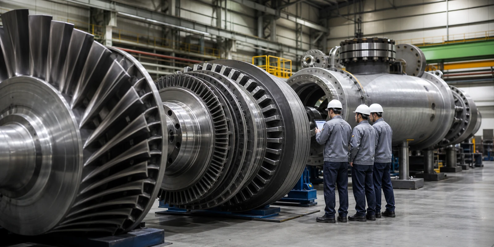

두산에너빌리티 주식이 시장의 시선을 받는 이유는 단순히 원전 테마에 묶여 있기 때문만은 아닙니다. 2026년 1분기 회사 IR 자료에서 에너빌리티 부문은 수주 2조7857억원, 수주잔고 24조1343억원, 매출 1조8959억원, 영업이익 570억원을 제시했습니다. 숫자만 놓고 보면 수주잔고가 두껍고, 원전 기자재와 가스터빈 매출이 함께 늘어나는 장면입니다. 다만 주식에서 중요한 질문은 여기서 끝나지 않습니다. 이 잔고가 어느 속도로 매출이 되고, 그 매출이 어느 정도 마진과 현금 회수로 남는지가 다음 호가창의 질문입니다.
이 글은 두산에너빌리티의 매수나 매도를 권하는 글이 아닙니다. 원전, SMR, 가스터빈, 데이터센터 전력 수요라는 큰 단어가 주가를 움직일 때 투자자가 어떤 순서로 공식 자료와 숫자를 확인해야 하는지 정리하는 정보형 분석입니다.
원전 기대는 잔고로 남나

두산에너빌리티를 볼 때 가장 먼저 확인할 곳은 대형 원전 기대가 실제 수주잔고 안에서 얼마나 구체적인 이름과 일정으로 남아 있는지입니다. 원전은 한 번 수주가 잡히면 규모가 크고 기간도 길지만, 정책 결정, 금융 조달, 기자재 제작, 현장 공정이 차례로 맞물려야 매출 인식이 이어집니다. 그래서 원전 이슈는 발표가 나오는 순간보다 그 뒤의 계약 범위, 공급 품목, 납기, 선수금과 중도금 조건을 따라가야 합니다.
회사가 2026년 1분기 자료에서 체코 원전 기자재 매출 증가를 언급했다는 점은 의미가 있습니다. 원전 기대가 단순한 구호에 그치지 않고 이미 일부 매출 항목에서 보이기 시작했다는 뜻이기 때문입니다. 다만 체코, 국내 신규 원전, 베트남 협력, 미국 AP1000 공급망 같은 이름은 모두 서로 다른 속도를 가집니다. 같은 원전이라는 단어 안에서도 두산에너빌리티가 원자로 주기기를 맡는지, 터빈·발전기 계통을 맡는지, 단품 기자재인지, 시공 범위가 포함되는지에 따라 마진과 위험이 달라집니다.
거래대금이 원전 뉴스에 먼저 반응하더라도, 다음 확인은 수주잔고의 질입니다. 수주잔고가 커지는 것만큼 중요한 것은 그 안에서 고수익 기자재 비중이 올라가는지, 과거 저마진 프로젝트 부담이 줄어드는지, 공정 지연과 원가 상승을 얼마나 계약 조건으로 방어하는지입니다. 원전 기대가 주가에 오래 남으려면 뉴스 제목보다 잔고의 구성표가 더 설득력 있어야 합니다.
SMR은 시간표가 길다
SMR은 두산에너빌리티에 가장 매력적인 이야기이면서 동시에 가장 긴 시간표를 요구하는 영역입니다. 회사는 X-energy, NuScale 등 글로벌 SMR 사업이 구체화될 때 제작 기회를 넓힐 수 있다고 설명해 왔고, 2026년 1분기 자료에서도 X-energy 16모듈 핵심소재 예약계약과 장주기 품목 논의를 언급했습니다. 이 대목은 시장이 좋아하는 단어가 많습니다. SMR, 나스닥 상장, 데이터센터 전력, 선제 제작, 글로벌 공급망이 한꺼번에 붙기 때문입니다.
하지만 SMR은 아직 대량 상업 운전이 일반화된 산업이 아닙니다. 인허가, 표준설계, 원전 부지, 전력구매계약, 초기 호기 경제성, 고객의 자금 조달이 모두 지나가야 실제 반복 수주가 열립니다. 그래서 SMR 뉴스는 예약계약과 본계약, 장주기 품목 발주와 실제 납품, 기술 참여와 매출 인식 사이를 나누어 읽어야 합니다. 두산에너빌리티가 제작 역량을 갖고 있다는 사실과, 그 역량이 매년 안정적인 이익으로 바뀐다는 사실은 다른 단계입니다.
주식시장에서 SMR은 기대의 속도가 숫자보다 빨라지기 쉽습니다. 이때 필요한 기준은 다음 계약의 이름이 아니라 계약의 성격입니다. 예약계약인지, 설계 지원인지, 기자재 제작계약인지, 장기 서비스까지 이어지는지에 따라 가치가 달라집니다. 특히 장주기 품목은 발주가 빨리 잡히면 공장 가동률과 선수금에는 도움이 될 수 있지만, 초기 사업의 설계 변경과 일정 변동 위험도 함께 봐야 합니다. SMR 기대가 단기 테마를 넘어가려면 반복 발주와 표준화된 제작 경험이 쌓여야 합니다.
가스터빈은 데이터센터를 타나
두산에너빌리티를 원전주로만 보면 2026년의 중요한 변화를 놓칠 수 있습니다. 회사 IR 자료에서 1분기 수주 증가는 국내와 북미 빅테크 데이터센터향 가스터빈, 스팀터빈 수주가 함께 영향을 준 것으로 설명됩니다. 특히 2026년 1분기에는 가스터빈 10기 수주, 북미 데이터센터향 7기 계약, 북미 누적 12기 수주가 제시됐습니다. 이 흐름은 전력 수요가 AI 데이터센터 확장과 맞물리며 가스발전 장비 수요를 다시 부르는 장면입니다.
가스터빈 사업의 장점은 원전보다 수주와 납품 사이의 시간이 짧고, 장기 서비스 계약이 붙을 경우 반복 매출을 만들 수 있다는 점입니다. 터빈 한 대를 파는 것보다 중요한 것은 설치 이후 정비, 개보수, 부품 교체, 운영지원 계약이 붙느냐입니다. 회사가 2034년 누적 100대 이상 수주와 서비스 매출 확대 전망을 제시한 것도 이 반복 매출의 가능성을 강조하는 대목입니다.
다만 데이터센터 전력 수요가 곧바로 두산에너빌리티의 이익으로 직행하는 것은 아닙니다. 북미에서 초도 레퍼런스를 늘리는 동안 가격 조건, 납기, 품질 보증, 장기 서비스 계약 체결 여부가 함께 확인되어야 합니다. 미국과 중동, 동남아 시장으로 넓히려면 현지 고객의 신뢰와 서비스 네트워크도 필요합니다. 주가가 가스터빈 수주에 반응한다면, 다음에는 신규 기수보다 장기서비스 계약과 마진이 따라오는지를 봐야 합니다.
수익성은 어디서 좋아지나
에너빌리티 부문의 2026년 1분기 영업이익률은 3.0%로 제시됐습니다. 전년 동기 대비 개선됐지만, 4분기와 비교하면 낮아졌습니다. 이 숫자는 두산에너빌리티를 읽을 때 균형을 잡게 해 줍니다. 매출이 늘고 핵심 성장사업 비중이 커지는 방향은 긍정적이지만, 프로젝트형 사업은 분기마다 공정 진행률, 원자재 가격, 외주비, 환율, 일회성 비용에 따라 이익률이 흔들릴 수 있습니다.
그래서 두산에너빌리티의 재평가를 말할 때는 매출 성장보다 마진의 지속성을 더 집요하게 봐야 합니다. 원전 기자재와 가스터빈은 회사가 강조하는 핵심 사업이지만, 복합 EPC나 과거 프로젝트 비용 부담이 섞이면 전체 이익률은 생각보다 느리게 움직일 수 있습니다. 수주잔고가 커져도 저마진 물량이 많으면 주주가 체감하는 이익은 제한됩니다. 반대로 기자재와 서비스 비중이 높아지고, 원가 상승을 계약에 반영할 수 있다면 같은 매출에서도 이익의 질은 달라집니다.
거래대금이 몰리는 날에는 수주 규모가 먼저 보이지만, 실적 발표일에는 영업이익률과 현금흐름이 더 오래 남습니다. 특히 에너지 설비 기업은 대형 프로젝트의 선수금과 운전자본 변동이 큽니다. 수주가 많아질수록 재고와 매출채권이 늘어날 수 있고, 제작 기간이 길어지면 현금 회수 속도도 느려질 수 있습니다. 두산에너빌리티의 다음 실적에서는 매출 성장과 함께 운전자본, 현금성자산, 순차입금이 같은 방향으로 안정되는지 확인해야 합니다.
순차입금은 다시 늘었다
좋은 수주 이야기를 읽을수록 재무상태표도 함께 열어야 합니다. 2026년 1분기 에너빌리티 부문 순차입금은 3조5425억원으로 전분기보다 늘었고, 부채비율은 140.7%로 제시됐습니다. 연결 기준 순차입금도 3조3967억원으로 전분기 대비 증가했습니다. 이 숫자가 곧 위험을 단정한다는 뜻은 아니지만, 수주 성장과 재무 부담이 동시에 움직이는 회사라는 점은 분명히 보여 줍니다.
대형 원전과 가스터빈은 제작 설비, 인력, 소재, 품질 검증에 많은 돈이 먼저 들어갑니다. 수주잔고가 늘면 공장이 바빠지고, 장기적으로 매출 기반도 넓어질 수 있습니다. 그러나 공정 초기에 현금이 먼저 묶이고 납품과 검수가 늦어지면 차입 부담은 커질 수 있습니다. 특히 금리가 높거나 환율 변동이 큰 시기에는 금융비용과 외화 비용이 이익을 깎을 수 있습니다.
따라서 두산에너빌리티 주식을 볼 때는 수주 발표 다음에 차입금과 현금흐름을 함께 놓아야 합니다. 순차입금이 일시적으로 늘어난 것인지, 운전자본 증가가 수주 확대의 자연스러운 결과인지, 아니면 마진이 낮은 프로젝트가 현금을 더 많이 잡아먹는 구조인지 구분해야 합니다. 이 구분이 되지 않으면 원전과 데이터센터라는 큰 서사가 있어도 주가의 체력은 쉽게 흔들릴 수 있습니다.
다음 호가창의 질문
두산에너빌리티의 다음 확인 순서는 비교적 분명합니다. 첫째, 원전 수주잔고가 어떤 품목과 일정으로 매출화되는지 봐야 합니다. 둘째, SMR 예약계약과 논의가 실제 제작계약, 장주기 품목 발주, 반복 수주로 이어지는지 확인해야 합니다. 셋째, 북미 데이터센터향 가스터빈 수주가 장기 서비스 계약과 마진 개선으로 연결되는지 살펴야 합니다. 넷째, 순차입금과 운전자본이 수주 확대를 감당할 수 있는 속도로 관리되는지 봐야 합니다.
이 네 가지가 함께 맞물릴 때 두산에너빌리티의 주식 이야기는 단순한 테마를 넘어 실적 기반의 검증으로 넘어갈 수 있습니다. 반대로 한 축이라도 기대보다 느려지면 거래대금은 빠르게 다른 종목으로 이동할 수 있습니다. 한국주식에서 거래대금은 관심의 출발점이지만, 종가 이후에 남는 것은 결국 수주잔고의 질, 마진의 반복성, 현금 회수의 속도입니다.
두산에너빌리티는 원전, SMR, 가스터빈이라는 세 개의 큰 문을 동시에 두드리고 있습니다. 그 문이 모두 열릴 수 있다는 기대는 시장을 움직이기에 충분합니다. 이제 확인할 것은 문패가 아니라 문 안쪽의 숫자입니다. 다음 분기 자료에서 수주잔고, 서비스 계약, 영업이익률, 순차입금이 같은 방향으로 움직인다면 시장의 질문도 조금 더 길게 이어질 수 있습니다.